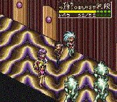

|


Review
Game Type: Isometric-View RPG
Fairly similar to the Shining Force series. Each character has more
attacks to select from, though. There are no towns, no equipment, and no
items to use during battle. All the major Tenchi characters from the
first OVA series are playable (sadly this game predates Kiyone), as
are some minor characters (Yukinojo) and a couple original creations.
Gameplay: 80/100
Basically any Shining Force fan will know what she's doing here. You
position each character on the battlefield, make your choice of that
character's arsenal of special attacks, choose targets, and sit back and
watch the devastation. Each special attack will cost you a certain number
of attack points, which characters accumulate each turn (there's no MP),
and each has its own radius of effect. Each character moves a little
differently; Tenchi can only walk and stand on solid ground, Ryo-Ohki
can jump over small pits, and Ryoko can teleport through walls and hover
in midair. Learning your characters' strengths and weaknesses and how
to use them is essential to success.
I have some minor gripes with the gameplay, as it's not 100% polished.
The isometric view isn't usually awkward, but sometimes the screen doesn't
scroll far enough to let you see the enemies' position readily, meaning
you have to back out of several menus and scroll over to them manually.
This could have been fixed. Also, some attacks can't pass over pits,
which is fine, except that this applies to all straight-line attacks.
When you're crossing over a bridge and can't fire laser beams to either
side this gets annoying. The battles don't have the scope of Shining Force;
the battlefields are much smaller and you can only use four characters at
once. And most importantly, the game's a bit too short. Most players will
have it beat within a week.
Minor gripes aside, though, I enjoyed TM very much. The battles
are carefully balanced, so that you'll always have to struggle if you
want to win. Your characters are constantly discovering new techniques,
and you'll need to learn to use each of them. And although it's short
the game does have some replay value, since you're not likely to see
all the attacks or even all the characters the first time through.
Graphics: 80/100
There's nothing fancy about the graphics. Attacks are shown right on
the field rather than in cutaways like Shining Force. There are no
eye-popping special effects. But the visuals are nonetheless colorful
and appealing. The battlefields include bridges over streams and the
crystal palaces of another world. The characters are large onscreen and
are fairly good representations. And of course there's lots of character
artwork in the cinemas. (As far as I can tell it's by the same artists
that worked on the series.)
Sound: 70/100
The music is passable, but I don't believe a single one of these
songs is taken from the series. The sizable number of voice samples,
however, most definitely are. They're a tiny bit grainy but not enough
to really annoy.
Overall: 80/100
I've already been accused of liking this game only because I love the
anime series so much (here I glance up at the Ryo-Ohki doll adorning my
computer), but I really think this is a decent RPG. Surviving fights
is a constant (but not insurmountable) challenge, which is more than I can
say for some Final Fantasy games. Different battles require different
strategies, and when you've found a good one the results are tangible.
The graphics aren't exactly flashy but have definite appeal, and of course
the character designs are the best in any game, ever. (Well, probably.)
My only real problem with the game is its brevity.
Ah, yes, the importability factor... You'll be able to figure out the
simple menus as well as anyone fluent in Japanese (although even they might
have some trouble figuring out the little quirks). You'll of course miss
the story text, but what does any Tenchi story consist of? (Tenchi and Co.
defeat horrible space menace, Aeka and Ryoko quibble, fade out, The End.)
For emulator users, a group is currently working on a translation, but
my money is against this ever being completed. Language aside... Fans of
Shining Force-style games should consider it, as this is one of the best
in the genre. And Tenchi fans absolutely must scoop this one up. With all
the artwork and voice samples, it's an otaku's dream.
|